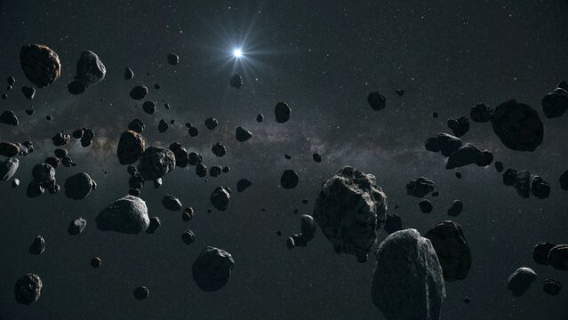

Cinturon de asteroides

-
Descripción: El cinturón de asteroides es una región del sistema solar ubicada entre las órbitas de Marte y Júpiter, donde se encuentra la mayor concentración de asteroides.
-
Datos Principales:
-
Ubicación: Entre 2.1 y 3.3 unidades astronómicas (UA) del Sol.
-
Número de asteroides: Millones de asteroides, desde pequeños trozos de roca hasta cuerpos que miden cientos de kilómetros de diámetro.
-
Cuerpo más grande: Ceres, que tiene un diámetro de aproximadamente 940 km y es clasificado como un planeta enano.
Ceres
.jpg)
-
Hechos Interesantes:
-
Origen: Se cree que el cinturón de asteroides está compuesto por material primordial del sistema solar que nunca se formó en un planeta debido a las perturbaciones gravitacionales de Júpiter.
-
Diversidad: Los asteroides en el cinturón varían en composición, con algunos hechos de roca y metal, mientras que otros son ricos en carbono.
-
Misiones espaciales: Varias misiones espaciales, como la sonda Dawn de la NASA, han explorado asteroides en el cinturón para aprender más sobre su composición y origen.
-
Colisiones: Las colisiones entre asteroides en el cinturón pueden generar fragmentos más pequeños, conocidos como meteoroides, que a veces caen en la Tierra como meteoritos.